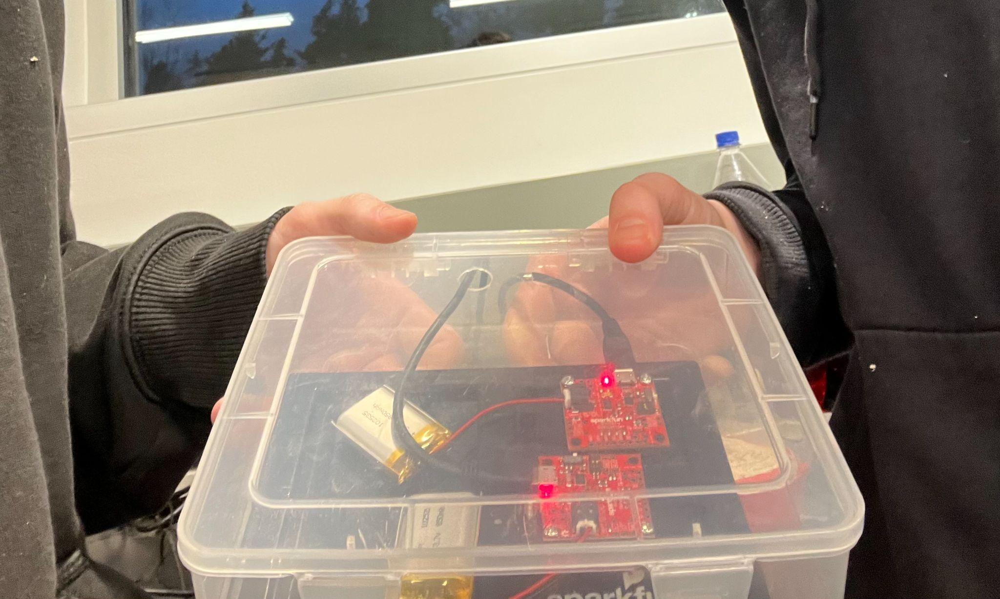
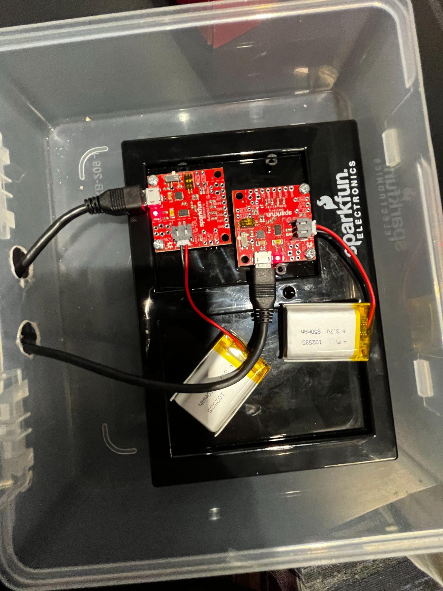

EDMONDS COLLEGE · ROCKETRY CLUB
Battery Babysitter.
A portable case for charging and checking lithium batteries at rocket launches, built with a teammate for our club.

THE CHALLENGE
Make the electronics usable in the field.
A professor involved with the rocketry club asked my friend and me to make a portable case for our lithium batteries. It needed to hold two Battery Babysitter boards, which indicate battery charge status and charge the batteries, while being straightforward to handle at a launch site.
We started with a spare plastic box and drilled two holes in the back for the boards’ power connections. The next problem was keeping the two boards stable inside. After discussing several arrangements, we repurposed a scrap plastic piece as a mounting plate and fastened both boards to it.
The most difficult part was usability. The wires limited where the boards and batteries could sit, so we had to think through the layout and access as we assembled the case. The completed box carried and charged the batteries we used to power parts of the rocket on site.

DESIGN DECISIONS
Simple parts, deliberate layout.
- Reuse the enclosure. A spare plastic box provided a portable shell.
- Secure the boards. A scrap plastic part became a shared mounting plate for both boards.
- Plan around wiring. The cable paths shaped how the parts could fit and how a person would use the case.
WHAT I TOOK AWAY
Integration is a design problem.
This project taught me that getting electronic components to fit is only part of the work. Their placement, mounting, wiring, and everyday handling all affect whether a device is useful. Building it with a teammate gave me practical experience making those decisions together.
← Back to projects